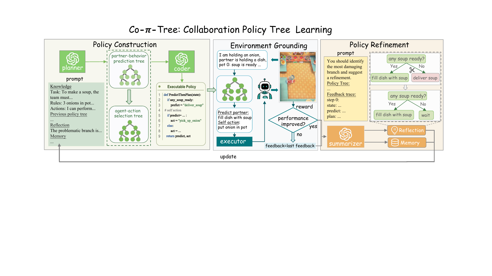

Co-π-tree addresses two linked obstacles in human-AI collaboration: opaque MARL policies and expensive online LLM decision making.
Challenge 1: Opacity
MARL policies are fast but hard to inspect, audit, or locally revise.
Co-π-tree: represents behavior as explicit branch-level rules.
Challenge 2: Latency
Online LLM agents repeatedly query the model during execution.
Co-π-tree: distills reasoning into code and executes it directly.
Challenge 3: Feedback
Sparse rewards do not reveal which local decision caused failure.
Co-π-tree: uses execution traces to revise problematic branches.

Policy Construction
The planner generates a two-component policy tree. The
partner-behavior prediction tree estimates the teammate's likely
behavior, and the agent-action selection tree chooses the controlled
agent's action conditioned on that prediction. A coder translates the
textual tree into executable Python while preserving explicit
if/elif branches.
Partner Prediction Tree
Predicts likely partner behavior from a grounded scene state, recent interaction history, and task progress.
Action Selection Tree
Chooses a complementary action conditioned on the same scene state and the predicted partner behavior.
Environment Grounding
Tensor states are converted into readable semantic fields describing task progress, object status, agent locations, and partner behavior. The executor maps high-level tree actions such as picking up onions or delivering soup into feasible movement and interaction commands.
Policy Refinement
Candidate policies are evaluated through partner interaction. The resulting trace records scene states, execution feasibility, predicted partner behavior, and realized partner behavior. A summarizer turns this feedback into localized reflection, allowing the planner to revise weak branches while preserving effective behavior elsewhere.
Contributions
- Interpretable policy-tree structure: partner prediction and action selection are represented as explicit decision branches.
- Closed-loop distillation: LLM reasoning is distilled into executable code and improved through interaction feedback.
- Efficient deployment: once learned, the policy tree runs without querying an LLM at every decision step.